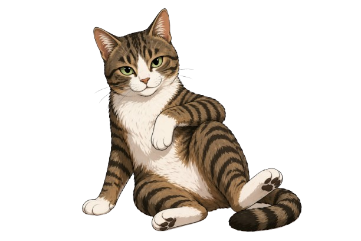
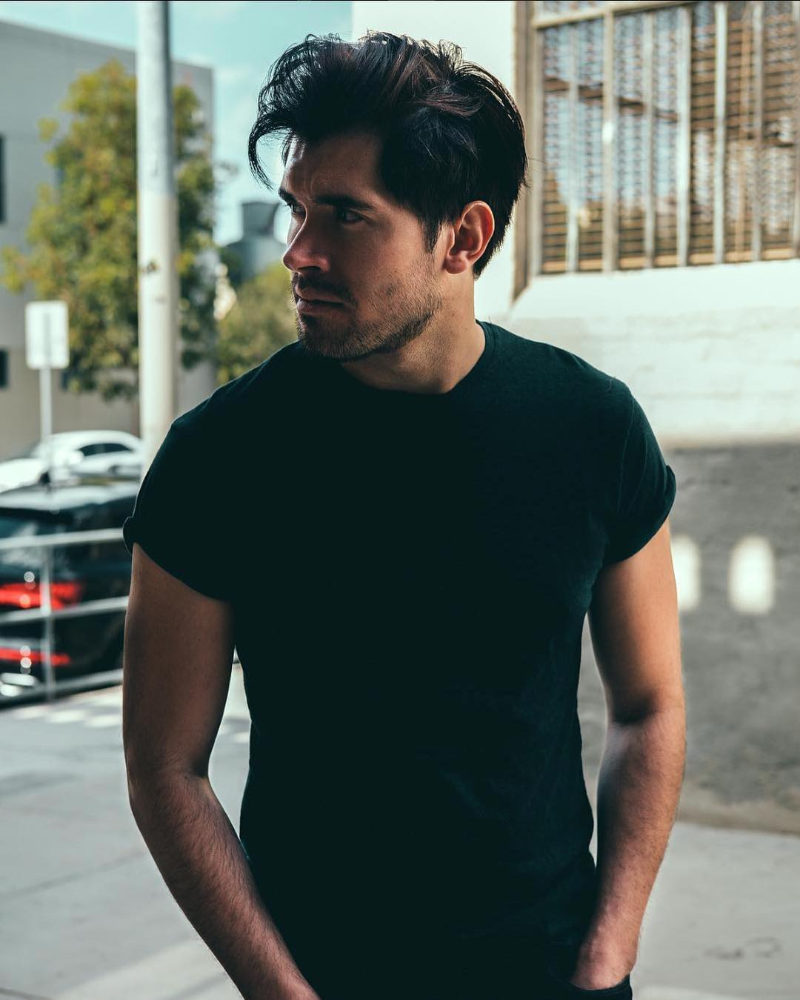
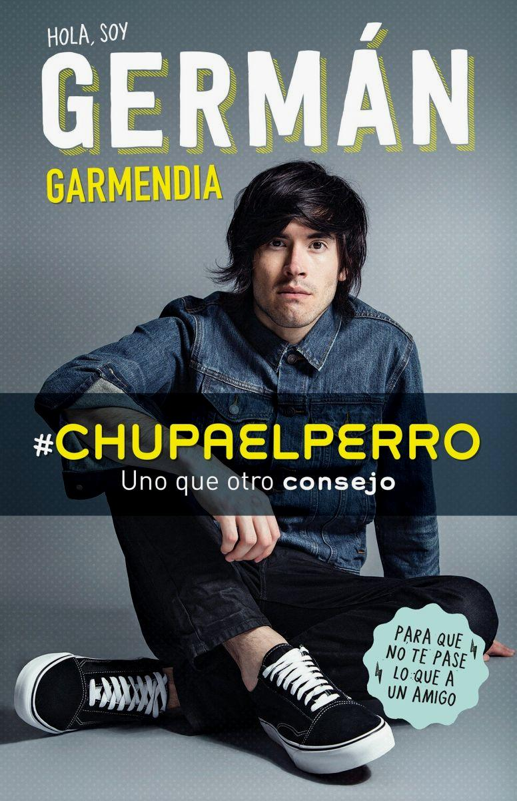
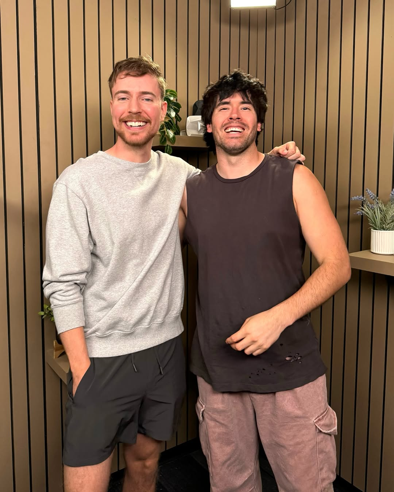
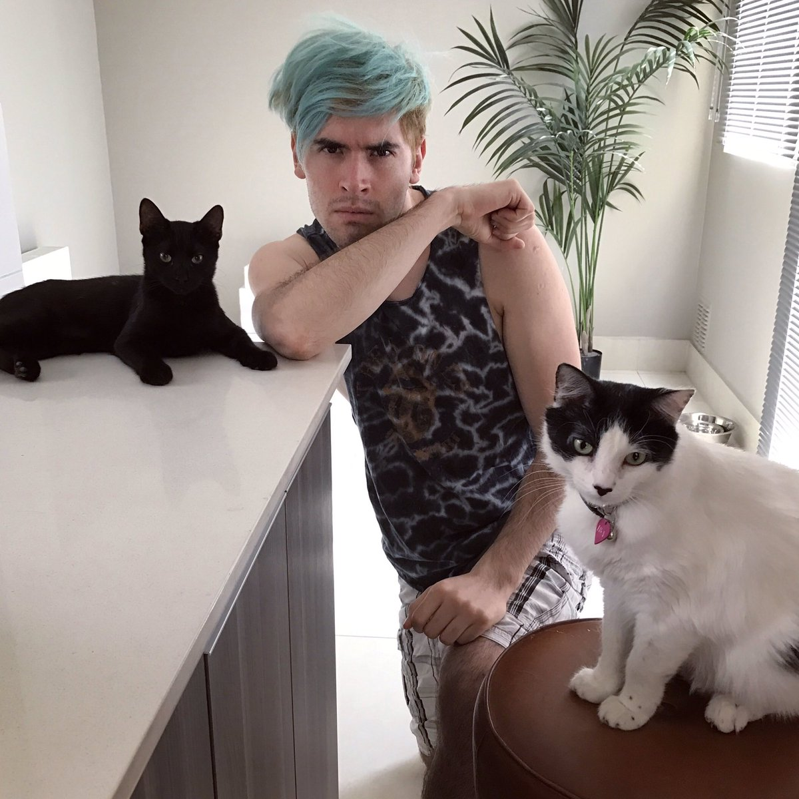
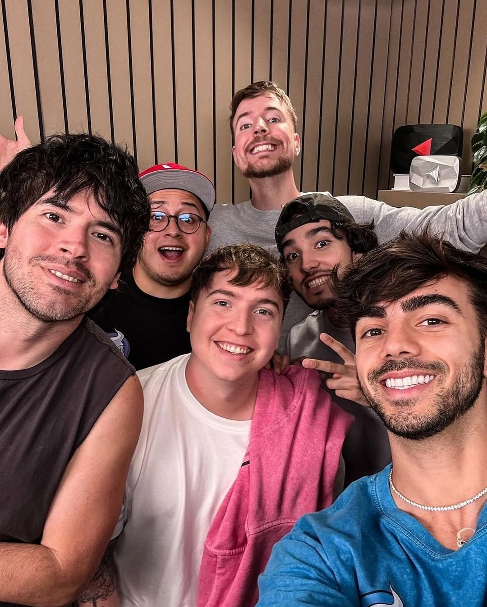
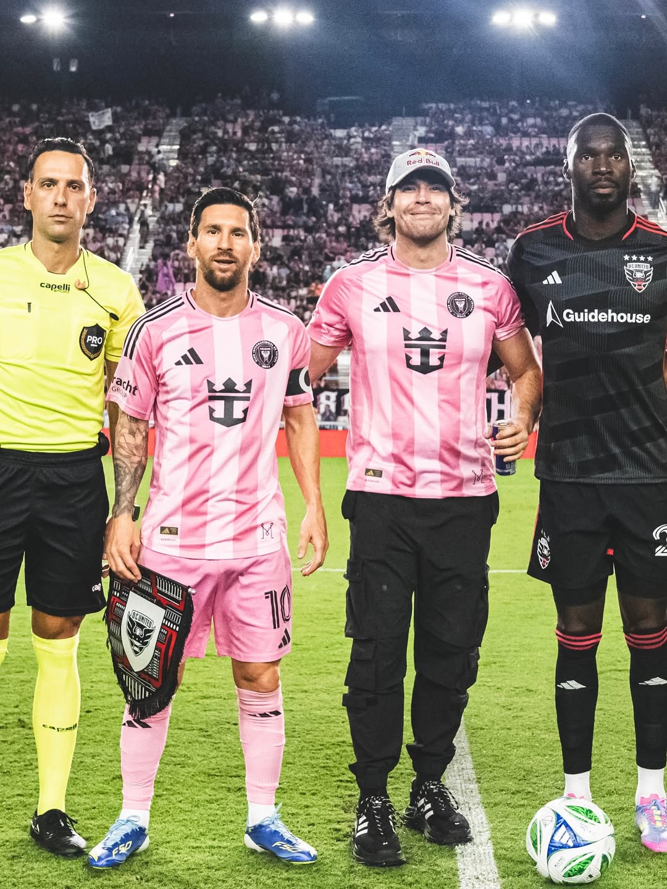
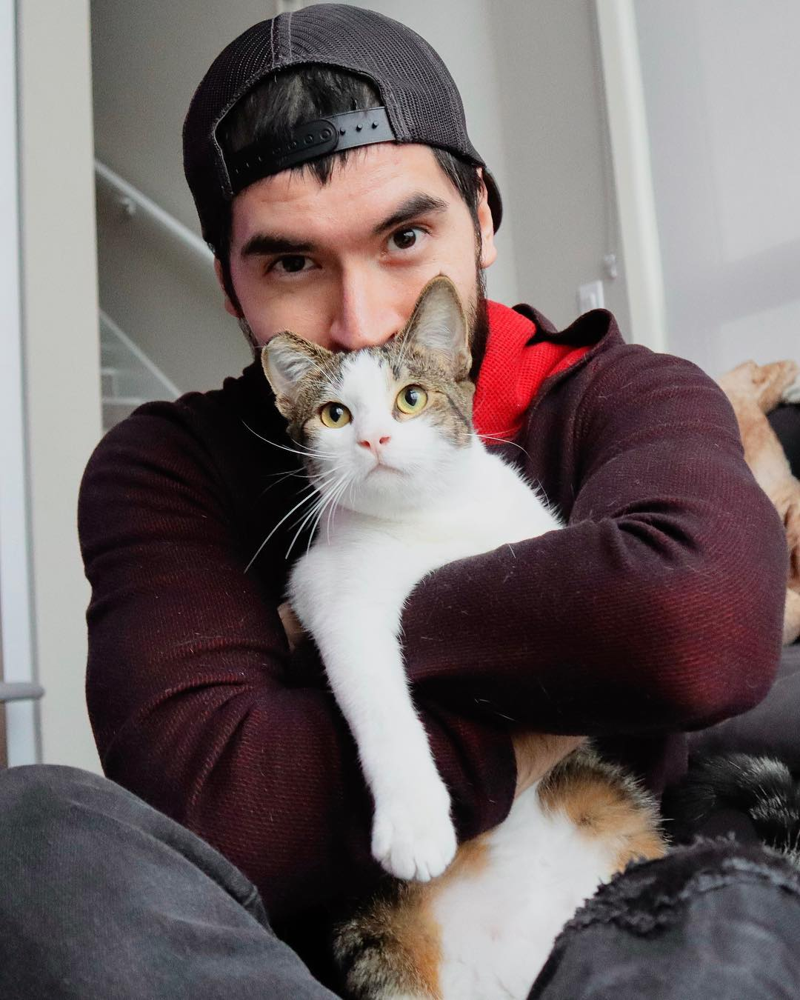
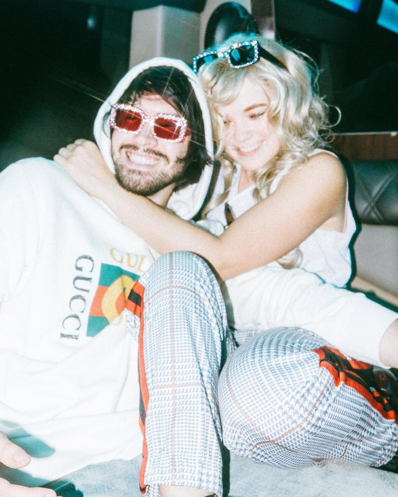

2011
HolaSoyGerman
El inicio de la gramática visual.
El video "Las cosas obvias de la vida" introduce el jump cut rápido y redefine la estética vlogger en español.
Germán Garmendia no es solo un creador de contenido; es una generación entera. Desde los rincones de su habitación hasta los escenarios más grandes del mundo.
Más de 40 millones de suscriptores, dos botones de diamante, una banda de música, una novela best-seller y un legado que trasciende plataformas.


2011
El video "Las cosas obvias de la vida" introduce el jump cut rápido y redefine la estética vlogger en español.
2012
Consolidación de un humor inocente y ácido con videos históricos como "Los Hermanos" o "Los Profesores".
2013
Primer creador de habla hispana en alcanzar la cima global y demostrar el peso demográfico de LATAM.
2013
Lanzamiento del canal de gaming y vlogs diarios: la jugada clave para sostener la conexion con su comunidad.
2016
Primera persona en el mundo en certificar dos canales con más de 10 millones de suscriptores.

2016
Su best-seller y la FILBo con más de 50,000 asistentes llevan el fenómeno al mundo físico.
2016
Salto formal a la música con su banda de pop-rock, mientras "Cambia" rompe tendencias digitales.
2023
La nueva generación de streamers lo reconoce en México por más de una década en el Top 1.
2024 - 2025
JuegaGerman supera los 50M y Germán se consolida como figura global junto a Red Bull Players.





